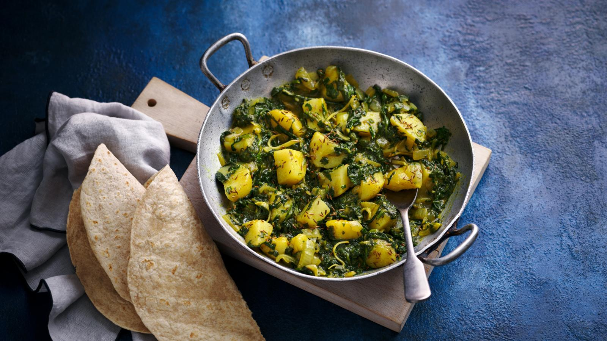

Saag Aloo

Description
Ingredients
- 3 tbsp vegetable oil
- 2 tsp cumin seeds
- 5 garlic cloves, sliced
- 2 bird’s-eye green chillies, finely chopped
- 115g/4oz onion, finely chopped
- 1 tbsp ground coriander
- 1 tsp ground turmeric
- 400g/14oz frozen chopped spinach
- 350g/12oz potatoes, peeled, cut into large cubes and boiled until just tender
- 1cm/½in piece fresh root ginger, cut into slivers
- salt
Steps
- Heat the oil in a large saucepan or wok over a medium heat. Add the cumin seeds and, as they begin to sizzle, add the garlic and chillies. Fry for a minute, then add the onion and continue to fry for 7–8 minutes, stirring well.
- Add the coriander and turmeric and stir well. Add the frozen spinach, put a lid on the pan and cook over a medium heat for 5 minutes. Season with salt. As the spinach begins to release its moisture, turn the heat to low and cook for a further 5 minutes.
- Add the cubed potato and ginger and cook for 5 minutes: the potato will absorb any residual moisture. Serve with chapatis or rice.
Home